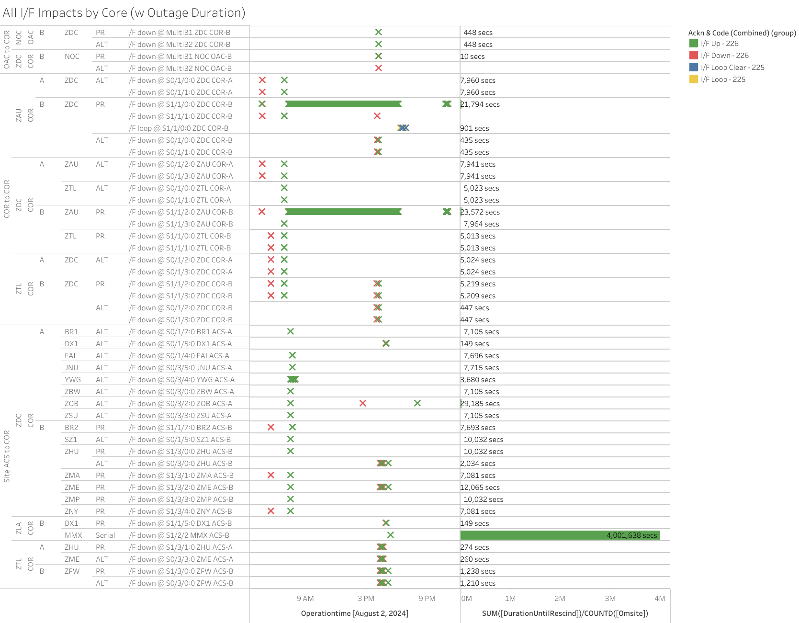
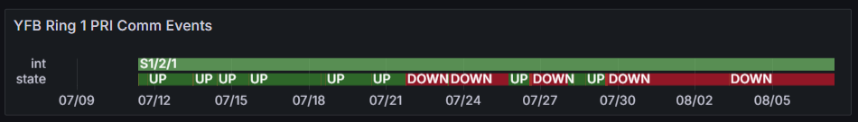

Weekly Highlights 20240731-20240807
7/31 - Ring 1 Restored to MX
- 7/31 04:28 - MTP Ring 1 comms restored -- ~1.8 million seconds; down since 7/9
- 7/31 04:42 - MMX Ring 1 comms restored -- ~167760 seconds; down since 7/29
- 7/31 07:16 - MMX WRE-A restored to Normal
7/31 - ZDC WRE-A Fault
- 7/31 23:47 - ZDC WRE-A Faulted with SEs 29, 30, 52, 53, 59; Control Powered and restored to Normal at 8/1 00:56
8/1-8/2 - BRW WREs Reset
- 8/1 17:25 - BRW WRE-C to Maintenance and Reset to address SE 309 Processor Power / Fan Failure -- temperatures spiking; restored to Normal at 8/1 17:44
- 8/2 00:51 - BRW WRE-A to Maintenance and Reset to address SE 309 Processor Power / Fan Failure -- temperatures spiking; restored to Normal at 8/2 01:22
8/2 - Major Comm Event at ZDC (MR-185957A)
- 8/2 04:42 - Major comm impact centered at ZDC
affecting both Rings for
MR-185957A-- ref LIR 50596021- 8/2 05:33 - SM9 GEO switched from ZDC to ZTL Selected Source
- 8/2 06:57 - Most COR-COR comms clear except ZDC-ZAU Ring 2 PRI COR-COR...
- 8/2 07:20 - ZDC-ZAU Ring 2 PRI COR-COR starts flapping...
- 8/2 07:32 - Most WRS-COR comms clear; last comms finished clearing at 8/2 06:59
- 8/2 16:02 - Reset ZDC COR-B Entire Subsystem to address open comm issues -- issues did not clear after Reset, and ZTL GPS Clock Ring 2 remained down after the Reset...
- 8/2 18:07 - ZDC-ZAU Ring 2 PRI COR-COR down hard; restored to flapping at 8/2 22:48
- 8/2 23:00 - Last events cleared (~47100 seconds total)

- 8/2 14:40 - ZOB Ring 1 ALT comms down hard to ZDC COR-B -- may be related to MR recovery; line cleared at 8/2 19:59 (~19123 seconds)
8/2 - MMX Ring 2 Comms Cleared
- 8/2 17:24 - MMX Ring 2 comm line cleared (~4
million seconds; down since 6/17) --
showing interface UP at the ZLA Router... The UDP data is still ZERO, so no WAAS data is getting through on Network 2.- TIJ says that they connected MMD at around the time MMX Ring 2 comms cleared
8/3 - ZOB WRE-B Freq Std Replaced
- 8/3 17:39 - ZOB WRE-B returned to Maintenance
after Freq Std replaced; restored to
Normal at 8/3 18:16
- ZOB WRE-B -
7/30-8/3 - Freq Std
strong burnt electronics smell and the power LED was off
- ZOB WRE-B -
7/30-8/3 - Freq Std
8/6 - MMD Ring 2 Comms Restored
- 8/6 15:16 - MMD Ring 2 comms cleared -- down since
3/7/2023 (~44.7 million seconds); UPD is also
zero for MMD Ring 2
- After investigation, it was also determined that Ring 1 UDP is missing for MPR and MSD, so WAAS data is missing for those sites even though they have Ring 1 comms active
Various Comm Impacts
* Does not include single-line impacts <60 seconds which do not cause an outage
Due to data issues with Tableau, it is not possible to determine the comm events with accuracy. For now, this section will only list current down comms.
SSM-WAAS-066 Circuits Outstanding
- OTZ - Following circuits delivered
/ SA'd -- Circuit Validation
target
9/9/2024
- Ring 1 PRI to ZAU - FTIH-WS-053504
- Ring 2 PRI to ZLA - FTIH-WS-053508
- Ring 2 ALT to ZLA - FTIH-WS-053509
- BRW - Ring 2 ALT to ZLA -
FTIH-WS-053531
- 5/23 17:35 - BRW Ring 2
ALT comms down
hard --
ISR 0521-0090; ref LIR 802755624 - Router replacement did not clear issue; Troubleshooting ongoing...
- 5/23 17:35 - BRW Ring 2
ALT comms down
hard --
YFB Ring 1 PRI
- 7/29 17:01 - YFB Ring 1 comms flapping then down hard at 7/29 19:10; loopback testing at 7/30 04:06...
- 7/31 05:08 - YYR Ring 1 down hard + loopback testing impacting YYR Ring 1 and YFB Ring 1 to troubleshoot YFB Ring 1 comms down since 7/29; last event for YYR Ring 1 cleared at 7/31 09:41 (~16389 seconds) -- YFB Ring 1 still down hard...

MPR - Both Rings
- 7/24 06:05 - MPR Ring 1 comms down hard -- cleared 7/30 20:16 (~6 days 19 hours)
- Discovered that zero UDP is coming through on Ring 1 for MPR, so no WAAS data
MSD - Both Rings
- 7/29 06:04 - MSD / MMX Ring 1 comms down hard -- cleared 7/30 20:16 (~1 day 19 hours)
- Discovered that zero UDP is coming through on Ring 1 for MPR, so no WAAS data
List of current offline WREs
List of current offline WREs -- ref WAAS Status Monitor
All Depot shipments to Mexico are halted until the customs process can be finalized
- MMX WRE-C - 5/15-... - Processor failed and could not be restored
- MPR WRE-B - 5/3-... - Inits failing -- looks like a bad freq std; due to shipping issues, there is no spare Freq Std and no ETA to recover WRE-B...
5/11/23-... - MX Ring 2 Satcom Upgrade
MX WAAS Sites comm upgrades in progress:
- 6/5 - Troubleshooting at ZLA-Tijuana shows 4 of 5 circuits have a telco issue localized to Tijuana that must be resolved by FTI; for the MSD circuit, Tijuana could see a loop from ZLA, but ZLA could not see the loop locally -- possible cable issue at ZLA
- Frequentis coordinating with SENEAM at TJX to complete end-to-end testing from remote site to TJX
- After successful testing to TJX; comms should come up at ZLA (if not, coordinate with FTI Harris)
- MMX Ring 2 is currently up, but zero UDP packets are coming through
- MMD Ring 2 is currently up, but zero UDP packets are coming through

Major Events


Comm Events

Mexico Comm Status